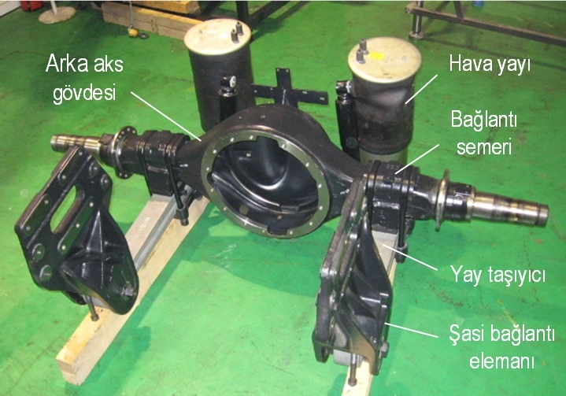
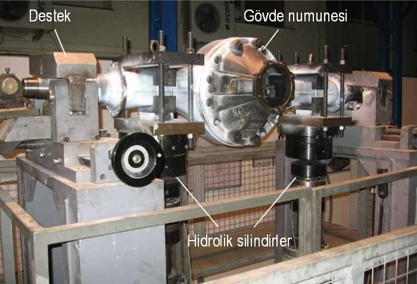
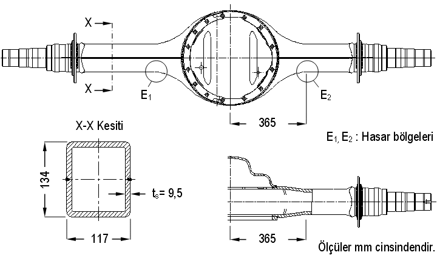
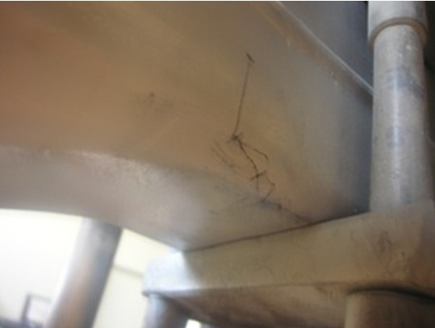
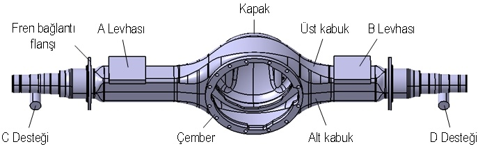
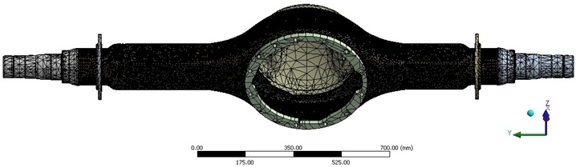

|
M. Murat Topaç
Dokuz Eylül Üniv. Müh. Fak., Makine Müh. Böl., Otomotiv A.B.D.
Bornova, Ýzmir
Hasan Günal
Ege Endüstri ve Tic. A.Þ.
Pýnarbaþý, Ýzmir
N. Sefa Kuralay
Dokuz Eylül Üniv. Müh. Fak., Makine Müh. Böl., Otomotiv A.B.D.
Bornova, Ýzmir
Not: Bu makale ilk olarak TMMOB Mühendis ve Makina Dergisi Aðustos 2008 sayýsýnda yayýnlanmýþtýr ve aþaðýdaki linkten PDF formatýnda indirilebilir;
www.mmo.org.tr/resimler/ekler/d85282513da4089_ek.pdf (2MB)
Özet
Arka aks gövdesi prototipine uygulanan düþey yorulma testleri sýrasýnda, öngörülen yük tekrar sayýlarýna ulaþýlmadan ortaya çýkan yorulma hasarý incelenmiþtir. Testlerde numunelerin genellikle ayný bölgeden hasara uðradýðý gözlenmiþtir. Hasarýn nedenini belirlemek amacýyla gövdenin bilgisayar destekli katý modeli oluþturulmuþ, gövde malzemesinin mekanik özellikleri çekme deneylerinden elde edilmiþtir. Bu veriler kullanýlarak, sonlu elemanlar yöntemi yardýmýyla gövde modelinin gerilme ve yorulma analizleri gerçekleþtirilmiþtir. Hasara uðramasý muhtemel bölgeler ve bu hasarýn ortaya çýkabileceði minimum yük tekrar sayýsý belirlenmiþtir. Test ve analizlerden elde edilen sonuçlar karþýlaþtýrýlmýþ, gövdenin yorulma ömrünün arttýrýlmasý için tasarým önerilerinde bulunulmuþtur.
Anahtar sözcükler: Arka aks gövdesi; Gerilme yýðýlmasý; Yorulma; Sonlu elemanlar yöntemi
Study of a fatigue failure on truck rear axle housing by using finite element method
Abstract
A premature failure that occurs prior to the expected load cycles during the vertical fatigue tests of a rear axle housing prototype is studied. In these tests, crack mainly originated from the same region on test samples. To determine the reason of the failure, a detailed CAD model of the housing was developed. Mechanical properties of the housing material were determined via tensile tests. Using these data, stress and fatigue analyses were performed by finite element method. Fatigue crack initiation locations and minimum number of load cycles before failure initiation were determined. Results provided from tests were compared with the analyses. Design enhancement solutions were proposed to increase the fatigue life of the housing.
Keywords: Rear axle housing; Stress concentration; Fatigue; Finite element method
Giriþ
Sabit akslar, yük taþýma kapasiteleri nedeniyle aðýr vasýta uygulamalarýnda genellikle tercih edilen konstrüksiyonlardýr [1]. Yüksek kapasiteli bir ticari araçta kullanýlan sabit arka aksýn yapýsý Þekil 1'de görülmektedir. Yol düzgünsüzlükleri nedeniyle ortaya çýkan dinamik kuvvetler, bu sistemin asýl taþýyýcý elemaný olan arka aks gövdesini çalýþma ömrü boyunca darbeli olarak zorlar. Bu nedenle gövde tasarýmýnýn yalnýzca statik yükleme etkileri üzerinden yapýlmasý, sistemin öngörülen iþletim ömründen daha önce hasara uðramasýyla sonuçlanabilir. Bunu önlemek için tasarým aþamasýnda, yorulma ömrü hesaplamalarýnýn da göz önüne alýnmasý gerekir.

Þekil 1. Sabit arka aks konstrüksiyonu
Endüstriyel uygulamalarda aks gövdesi prototiplerinin taþýma kapasitesi ve tekrarlý düþey yükler altýndaki yorulma ömrü, Þekil 2'de görülen düþey yorulma testleri yardýmýyla belirlenmektedir. Bu testlerde gövde kollarýna, yay taþýyýcý baðlantý noktalarýndan düþey doðrultuda monte edilen hidrolik silindirler, öngörülen test yükünü yorulma hasarý oluþuncaya kadar numuneye tekrarlý olarak uygular. Bir gövde prototipinin bu testi geçebilmesi için en az 5.105 yük tekrarý boyunca herhangi bir bölgeden hasara uðramamasý gerekmektedir.

Þekil 2. Arka aks gövdesinin düþey yorulma testi
Þekil 3'te geometrik yapýsý görülen asimetrik tipteki bir aks gövdesinin düþey yorulma testi sýrasýnda bazý numunelerin, öngörülen bu sýnýra ulaþmadan hasara uðradýðý görülmüþtür. Testlerde yorulma çatlaðýnýn ortaya çýktýðý minimum yük tekrar sayýsý yaklaþýk 3,7.105 olarak belirlenmiþtir. Hasarýn genellikle, numunelerin gövde kolu - diferansiyel yataðý geçiþ bölgelerinde (E1, E2) ortaya çýktýðý gözlenmiþtir. Test sýrasýnda oluþan hasara ait örnek Þekil 4'te verilmektedir.

Þekil 3. Arka aks gövdesinin geometrisi

Þekil 4. Test numunesinde oluþan yorulma çatlaðý
Hasarýn nedenini belirlemek amacýyla, CATIA® V5R15 yazýlýmý kullanýlarak gövdenin üç boyutlu katý modeli oluþturulmuþtur. Gövde malzemesinin imalat sonrasý kazandýðý mekanik özellikler çekme deneyleriyle belirlenmiþtir. Elde edilen sonuçlar ANSYS® Workbench V11.0 sonlu elemanlar paketinde deðerlendirilerek, gövdenin gerilme analizi gerçekleþtirilmiþtir. Böylelikle yorulma hasarýna neden olabilecek gerilme yýðýlma bölgeleri belirlenmiþtir. Çatlaðýn hangi yük tekrar sayýsýnda ortaya çýkacaðý hakkýnda fikir edinmek amacýyla, hazýrlanan gövde modelinin yorulma analizi yapýlmýþtýr. Bunun için, çekme deneyi sonuçlarýndan yola çýkýlarak gövde malzemesinin Wöhler diyagramý, yorulma mukavemeti düzeltme faktörleri ýþýðýnda yaklaþýk olarak oluþturulmuþtur. Analizden elde edilen sonuçlar test sonuçlarýyla karþýlaþtýrýlmýþ, yorulma ömrünün arttýrýlmasý için tasarým önerilerinde bulunulmuþtur.
2. Sonlu elemanlar modeli
2.1. Modelin oluþturulmasý
Analizlerde kullanýlmak üzere CATIA® V5R15 paket yazýlýmý ile hazýrlanmýþ üç boyutlu katý model Þekil 5'te görülmektedir. Gövde temel olarak, kaynakla birleþtirilmiþ ince cidarlý iki özdeþ kabuktan oluþmaktadýr. Yeterli rijitliðin saðlanabilmesi için diferansiyel kovaný baðlantý yüzeyine çember, sýzdýrmazlýk için arka yüzeye kapak kaynak edilmektedir.

Þekil 5. Arka aks gövdesinin katý modeli
A ve B levhalarý yay taþýyýcý baðlantý semerlerini, C ve D destekleri ise aksýn iz geniþliðini simgelemektedir. Hazýrlanan bu model, gerilme ve yorulma analizlerinin gerçekleþtirilmesi amacýyla ANSYS® Workbench V11.0 ticari sonlu elemanlar yazýlýmýna aktarýlmýþtýr. Gövdenin sonlu elemanlar modeli Þekil 6'da verilmektedir. Bu modelde her biri üçer doðrusal serbestlik derecesine sahip toplam on düðümden oluþan SOLID187 elemaný kullanýlmýþtýr [2]. Sistemi oluþturan elemanlar arasýndaki temas CONTA174 ve TARGE170 elemanlarý kullanýlarak modellenmiþtir. Model, 779.305 eleman ve 1.287.354 düðümden oluþmaktadýr.

Þekil 6. Gövdenin sonlu elemanlar modeli
|